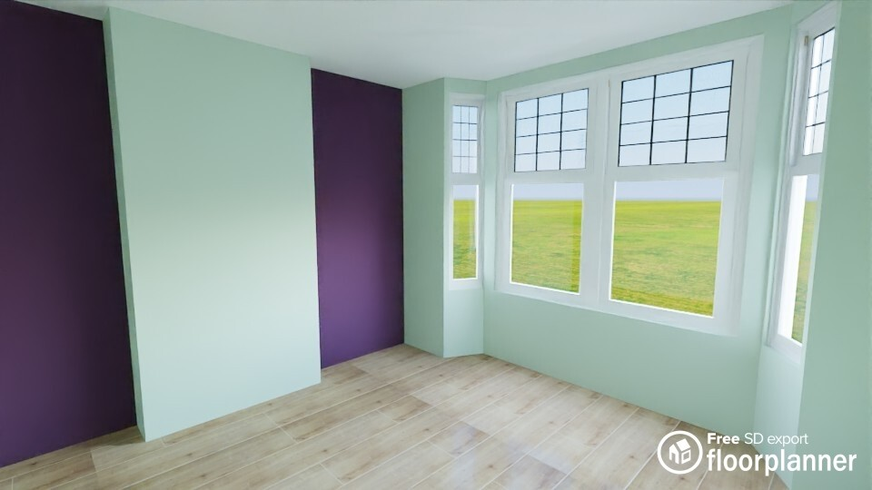
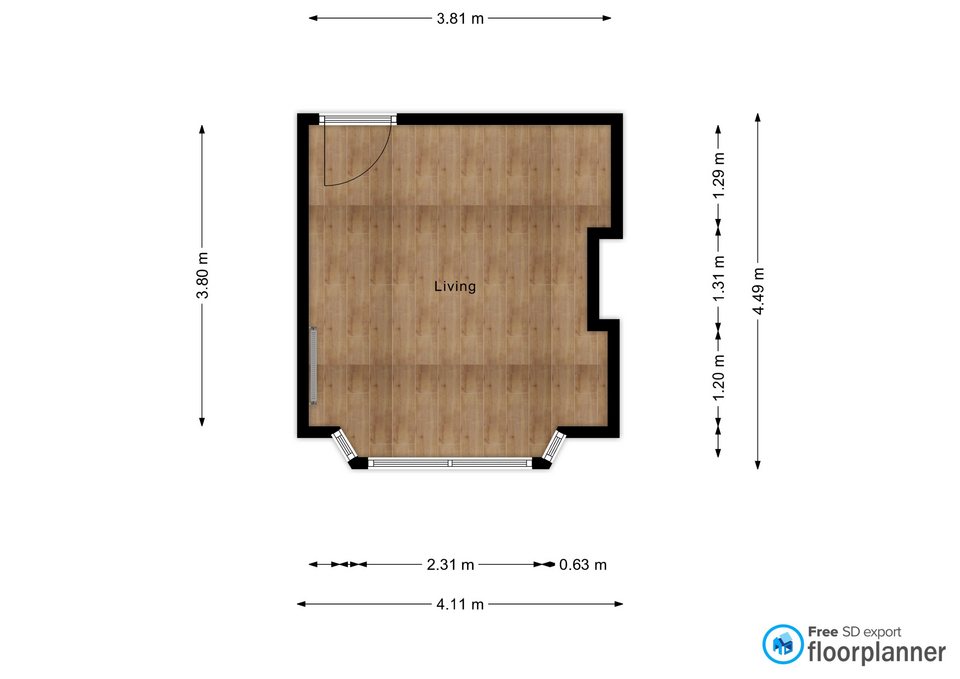

Decorating Guide
Property: 83A Lucien Rd, London SW17 8HS
Room: Ground floor front Victorian living room
Prepared for: Michael Henry
Date prepared: September 2026
Main objective: Prepare old bright yellow vinyl silk woodchip walls and redecorate with pale green main walls and aubergine fireplace alcoves.
Difficulty level: Moderate DIY, mainly because the shiny vinyl silk needs proper preparation before painting.
Estimated total timescale: 2 to 3 days including drying time.
Quick Decorating Summary
The Goal
- Room type: Ground floor front Victorian living room.
- Main decorating goal: Pale green main walls with aubergine fireplace alcoves.
- Recommended finish: Durable trade vinyl matt over bonding primer.
- Budget approach: Use practical trade-quality products without stripping, plastering, or buying unnecessary extras.
Priority Issues
- Existing finish: Bright yellow vinyl silk, which needs de-glossing and bonding primer.
- Wallpaper issue: Small bubbled woodchip area of approx. 1 m² near the bottom/front radiator-side external wall area.
- Repairs: Old picture holes need filling and spot-priming.
- Coats: One coat bonding primer, then two coats matt emulsion.
Room / Photo Observations
Main Walls
#C3D5C3
RGB 195, 213, 195
Fireplace Alcoves
#5C3A58
RGB 92, 58, 88

3D render supplied by the user. Use this for the overall visual feel, not as the measurement source.

2D measured floorplan supplied by the user. Use this for the room footprint, bay window position, fireplace wall, alcoves, radiator wall and entry doorway.
Room Measurements
- Maximum footprint: 4.11 m wide × 4.49 m long including the bay window.
- Wall height: Confirmed at 2.81 m.
- North wall: 3.81 m, incorporating the entry doorway.
- West wall: 3.80 m, incorporating the radiator.
- East wall: 3.80 m total run across alcoves and chimney breast.
- Bay/front wall: Central bay face 2.31 m, right return/offset 0.63 m, total bay span 4.11 m.
Visible / Known Decorating Constraints
- Do not remove the woodchip wallpaper.
- Do not plaster the walls.
- Do not mist coat unless bare plaster is exposed.
- Do not paint directly over the shiny vinyl silk.
- Do not treat the small bubbled area as a reason to strip the whole room.
Main Repair Recommendations
Localised Bubbled Woodchip Repair
Issue: Approx. 1 m² of bubbled woodchip wallpaper near the bottom/front radiator-side external wall area.
Why it matters: If paint goes straight over bubbling, the finish may lift, crack, flake, or show a raised edge.
Recommended action: Check that the paper is dry and stable. Use wallpaper repair/seam adhesive where it can be re-bonded. If it will not sit flat, cut away only the failed loose section, seal exposed edges, fill neatly, stipple the filler to mimic woodchip, then prime before painting.
Products/tools needed: Wallpaper repair adhesive, craft knife, seam roller or clean sponge, Toupret-style filler, damp sponge, sanding block and bonding primer.
Bright Yellow Vinyl Silk Preparation
Issue: Existing bright yellow vinyl silk is shiny, so matt emulsion may not grip properly if applied directly.
Why it matters: Skipping prep can lead to poor adhesion, scratching, patchiness, or peeling.
Recommended action: Lightly sand to de-gloss, clean gently, allow to dry, then apply one full coat of Zinsser Bulls Eye 1-2-3 or equivalent bonding primer before the two topcoats.
Products/tools needed: Medium-fine sanding block, sugar soap or suitable cleaner, cloths, dust sheets, masking tape, Zinsser primer and trade vinyl matt emulsion.
Wallpaper, Window & Surface Preparation Guidance
Would PVA Glue Work?
Short answer: PVA might physically stick a small loose area down, but it should not be the first-choice repair here.
PVA can seal the surface, create shiny patches, affect future paint adhesion, make later wallpaper repair or removal harder, show through paint as a visible patch, and fail again if the bubbling is linked to cold-wall condensation or moisture movement.
Best Repair Method for the 1 m² Bubbled Area
- Check the bubbled area is dry and stable before sealing or painting.
- Use proper wallpaper seam adhesive or wallpaper repair adhesive where the paper can be safely re-bonded.
- Use a small brush, nozzle, or syringe to work adhesive behind the bubble if possible.
- Gently press the paper flat with a clean sponge or seam roller.
- Wipe away excess adhesive immediately and let the area dry fully.
- If the paper will not sit flat, cut away only the failed loose section.
- Seal exposed edges, fill small damaged areas, and lightly stipple wet filler with a damp sponge to mimic woodchip texture.
- Prime the repaired patch before painting.
Important Surface Preparation
- Lightly sand the vinyl silk to break the shiny surface.
- Clean gently without soaking the wallpaper.
- Fill old picture holes flush and let the filler dry properly.
- Spot-prime filled and repaired areas.
- Apply one full coat of bonding primer before topcoats.
- Only use a mist coat if bare plaster is exposed.
Cold Wall Caution
The bubbling appears likely to be linked to the cold external wall/radiator-side area, possibly from condensation or temperature difference. This is not a confirmed hidden defect, so check the area is dry and stable before sealing or painting. If condensation continues, paint or repaired wallpaper may fail again.
Product Shopping List
Use this as a practical buying list. Prices, delivery and cashback need checking live before purchase.
Bonding Primer
Why suitable: Helps new matt paint grip over the old shiny vinyl silk finish.
Pale Green Trade Vinyl Matt
Why suitable: Better coverage and durability than budget retail paint, useful over textured woodchip and strong yellow.
Aubergine Trade Vinyl Matt
Why suitable: Enough for the two alcoves with spare for a strong colour second coat and touch-ups.
Repair & Prep Products
Why suitable: These handle the 1 m² bubbled woodchip repair, picture holes and surface preparation without major works.
Cheapest Price Comparison
This section is for the final buying check before purchase. Do not treat any option as confirmed cheapest until live product price, delivery/click-and-collect and cashback have been checked on the day.
Important Buying Rule
The cheapest single product is not always the cheapest overall option. Use this calculation:
Estimated final cost = product price + delivery cost - verified cashback.
| Item | Best Buying Route to Check | Price | Delivery / Collection | Cashback | Estimated Final Cost | Why This Route |
|---|---|---|---|---|---|---|
| Zinsser Bulls Eye 1-2-3 Primer, 5 L | Toolstation or Screwfix click-and-collect | check live price | delivery not verified today / check free click-and-collect | cashback not verified today | check live total | Heavy tin, so local collection may beat online delivery once delivery charges are included. |
| Toupret-style Interior Filler | Toolstation or Screwfix, ideally in the same basket as primer | check live price | delivery not verified today / check free click-and-collect | cashback not verified today | check live total | Best bought with prep items to avoid separate delivery for a small product. |
| Wallpaper Repair / Seam Adhesive | Toolstation, Screwfix, B&Q or Wickes | check live price | delivery not verified today / check click-and-collect | cashback not verified today | check live total | Only needed for the small 1 m² bubbled area, so choose the cheapest suitable local option. |
| Trade Vinyl Matt, Pale Green, approx. 10 L | Brewers, Decorating Centre Online, The Paint Shed, PaintWell or Paint Direct | check live price | delivery not verified today / check free-delivery threshold | cashback not verified today | check live total | Main wall paint is the biggest paint purchase, so delivery threshold and cashback can change the cheapest final basket. |
| Trade Vinyl Matt, Aubergine, approx. 2.5 L | Same retailer as the pale green paint if it lowers the total basket cost | check live price | delivery not verified today / check free-delivery threshold | cashback not verified today | check live total | Usually best bought with the main wall paint to reduce delivery cost and keep the colour order together. |
| Roller Sleeves, Tape, Sanding Block and Sundries | Toolstation, Screwfix, B&Q or Wickes | check live price | delivery not verified today / check free click-and-collect | cashback not verified today | check live total | Small decorating accessories can become poor value if delivery is added. |
Cheapest Overall Basket Approach
Check one basket for prep items at Toolstation or Screwfix, then one basket for mixed trade paint at Brewers, Decorating Centre Online, The Paint Shed, PaintWell or Paint Direct. Choose the lowest verified final total after delivery, click-and-collect options and cashback have been checked.
Delivery & Cashback Comparison
| Buying Option | Best For | Delivery Position | Cashback Position | Decision |
|---|---|---|---|---|
| Toolstation / Screwfix local basket | Primer, filler, wallpaper adhesive, sanding supplies and tools | delivery not verified today; check click-and-collect first | cashback not verified today | Likely best if collection is free and avoids delivery on heavy prep products. |
| Paint supplier basket | Pale green and aubergine trade vinyl matt | delivery not verified today; check free-delivery threshold | cashback not verified today | Likely best if both colours qualify for free delivery or verified cashback. |
| Single mixed basket | Everything from one retailer | delivery not verified today | cashback not verified today | Only choose this if the final total beats splitting paint and prep items. |
Paint Quantity Estimate
These are practical estimates using the confirmed 2.81 m wall height. Exact quantities may change slightly after deducting the bay window, doorway, radiator, fireplace opening and any unpainted trim.
| Area | Approx. Wall Width / Run | Height | Estimated Wall Area | Coats | Coverage Assumption | Suggested Quantity | Notes |
|---|---|---|---|---|---|---|---|
| Aubergine Alcoves | 1.29 m + 1.20 m = 2.49 m | 2.81 m | Approx. 7.0 m² before deductions | 2 topcoats | Trade vinyl matt approx. 10–12 m²/L per coat | 2.5 L | A deep aubergine may need generous coverage for an even finish. |
| Pale Green Main Walls | North, west, bay/front and remaining wall areas | 2.81 m | Approx. 30–32 m² after sensible doorway/window deductions | 2 topcoats | Trade vinyl matt approx. 10–12 m²/L per coat | 7.5–10 L | 10 L is safer because textured woodchip and strong yellow can use more paint. |
| Bonding Primer | Whole painted wall area | 2.81 m | Approx. 37–39 m² | 1 full coat | Check tin; often around 9–12 m²/L depending on surface | 5 L | Needed because the existing finish is bright yellow vinyl silk. |
Equipment Checklist
Preparation
- Dust sheets
- Masking tape
- Sugar soap or suitable cleaner
- Sponge and cloths
- Craft knife
- Seam roller or clean sponge
- Wallpaper repair adhesive
- Toupret-style interior filler
- Sanding block
Painting
- Roller frame
- Medium-pile roller sleeves
- Angled cutting-in brush
- Mini roller for radiator and edges
- Paint tray or scuttle
- Extension pole
- Zinsser Bulls Eye 1-2-3 primer
- Trade vinyl matt in pale green and aubergine
Safety & Finishing
- Eye protection
- Suitable sanding mask
- Step ladder used safely
- Bin bags
- Cleaning cloths
- Small artist’s brush for touch-ups
- Labelled pots for leftover paint
Step-by-Step Decorating Plan
Clear and Protect
Move furniture to the centre, lay dust sheets, and mask skirting, switches, sockets, radiator edges, fireplace edges and the entry doorway frame.
Check the Bubbled Wallpaper
Check the approx. 1 m² bubbled woodchip area near the bottom/front radiator-side external wall area. Make sure it is dry and stable before repair.
Repair Wallpaper and Fill Holes
Re-bond the bubbled paper where possible with wallpaper repair adhesive. If it will not sit flat, cut away only the failed section, seal, fill, stipple the filler, and fill old picture holes flush.
De-gloss and Clean the Vinyl Silk
Lightly sand all shiny bright yellow vinyl silk surfaces to dull the sheen. Clean gently with sugar soap or suitable cleaner and avoid soaking wallpaper areas.
Prime All Painted Wall Areas
Spot-prime filled repairs first, then apply one full coat of bonding primer over the old vinyl silk walls.
Paint Main Walls Pale Green
Cut in carefully around the bay, doorway, radiator, skirting and ceiling line. Roll the main walls in pale green without overloading the roller.
Paint the Aubergine Alcoves
Mask the chimney breast edges neatly, then cut in and roll the 1.29 m north alcove and 1.20 m south alcove in aubergine.
Remove Tape and Touch Up
Remove tape carefully while the final coat is still slightly soft. Touch up any misses, label leftover paint, and keep spare paint for future scuffs.
Drying & Recoat Timetable
| Stage | Typical Waiting Time | Practical Note |
|---|---|---|
| Wallpaper adhesive repair | Leave until fully dry; overnight is safest | Do not prime or paint while the paper is still soft or damp. |
| Interior filler | Follow filler instructions; often several hours to overnight | Sand only when fully dry and firm. |
| Bonding primer | Follow tin instructions; usually several hours before overcoating | Cooler rooms and textured wallpaper can slow drying. |
| Trade vinyl matt topcoats | Usually 2–4 hours between coats, but check the tin | Deep aubergine may need careful second-coat coverage. |
| Final cure | Several days before hard wear or cleaning | Avoid scrubbing fresh matt paint too soon. |
Big Tips
Big Tip: Do the Prep Properly
The money-saving route is not skipping primer; it is avoiding unnecessary stripping and plastering while still preparing the shiny vinyl silk properly. Sand, clean, prime, then paint.
Big Tip: Safety
- Ventilate the room well when sanding, priming and painting.
- Wear eye protection and a suitable mask when sanding old paint or filler.
- Check the bubbled wallpaper area is dry before sealing it.
- Do not paint over mould without treating the cause.
- Protect floors, sockets, switches, skirting and radiator edges.
- Use a suitable ladder safely.
- Keep children and pets away from wet paint and tools.
- Follow product label instructions for drying, recoating and ventilation.
Photo Captions & Reference Points
3D Room Render
Image file: images/3d-room-render.jpg
Caption: 3D visual render showing the intended pale green main walls and aubergine fireplace alcoves.
Reference use: Overall mood, colour balance and room feel.
Risk if misunderstood: Do not use the 3D render as the measurement source.
2D Measured Floorplan
Image file: images/2d-floorplan.jpg
Caption: 2D measured floorplan showing the bay window, wall runs, chimney breast, alcoves, radiator wall and entry doorway.
Reference use: Paint quantity estimates, room layout and practical planning.
Risk if ignored: Paint quantities and alcove planning may be less accurate.
Key Reference Points
- Front/radiator-side external wall area: approx. 1 m² bubbled woodchip repair zone.
- East/right fireplace wall: aubergine north alcove and south alcove either side of the chimney breast.
- Bay/front wall: protect window edges carefully while cutting in pale green.
- North/top wall: entry doorway trim needs masking before sanding and painting.
- West/left wall: radiator area needs careful prep and a mini roller or angled brush for access.
Final Finish Checklist
Before Painting
- Bubbled woodchip checked, re-bonded where possible, or neatly repaired.
- Old picture holes filled and sanded smooth.
- Vinyl silk lightly sanded to remove shine.
- Dust removed from walls, skirting and corners.
- All repaired areas spot-primed.
- All walls primed with bonding primer.
After Painting
- Two full pale green topcoats applied to main walls.
- Two full aubergine topcoats applied to both alcoves.
- Edges checked around the fireplace, bay, doorway, radiator and skirting.
- Tape removed carefully before paint fully hardens.
- Any small misses touched up with a clean brush.
- Leftover paint labelled for future touch-ups.